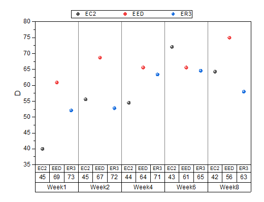
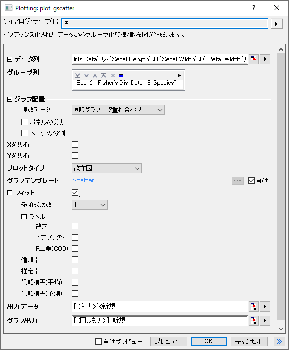

グループ化散布図
GroupedScatter-IndexedData

要求されるデータ
入力データとして最低1つのY列を選択します。さらに、1つ以上の列がグループ情報である必要があります。
グラフ作成
データを選択します。
- メニューの作図 > カテゴリカル：グループ化散布図 メニュー
または
plot_gscatterダイアログが開きます。

開いたダイアログで、入力データ範囲を選択します。最低でも1つのグループ列を追加し、必要に応じてページ/区分を分割する列を選択し、フィット曲線を追加し、プロットデータとグラフを配置する場所を決定します。プレビューまたはOKをクリックして作図し、ダイアログを閉じます。
plot_gscatter ダイアログボックス
| データ列
|
この欄は、入力データを指定するのに使用します。
|
| グループ列
|
グループ化列としてカテゴリ列を選択
|
| グラフ配置
|
- 複数データ：複数入力データの配置方法を選択します。
- 同じグラフ上で重ね合わせ: 選択した入力データを、同じグラフレイヤ上に重なり合ったプロットとしてプロットします。
- 同じグラフ内でレイヤを分ける：選択された入力データを同じグラフページ上の別々のレイヤに個別にプロットします。
- グラフを分ける: 選択した入力データを別のグラフウィンドウにプロットします。
- パネルの分割：このチェックボックスをオンにすると、別のグループ化列を指定して、横方向にパネルを分割できます。各グループ値に対して、個別のグループ化棒グラフが表示されます。区分の折り返しが自動で有効になり、目盛やラベルは、左右交互に表示されるのが初期設定です。複数の列でグループ化している場合でも、パネル情報ラベルは1行のみが上部に表示されます。パネルのバナー文字列としてすべての因子（グループ値）がカンマ区切りで表示されます。
- ページの分割：このチェックボックスをオンにすると、別のグループ化列を指定して、入力データを分割し、異なるグラフページにグループ化棒グラフを作成できます。各ページには、同じページ関連グループに属する列だけがプロットされます。ページに関連するグループ情報は、レイヤータイトルにカンマ区切りで表示されます（複数因子がある場合）。レポート用のグラフシートには、すべてのページが一覧表示されます。
|
| Xを共有/Yを共有
|
チェックを付けると、グラフとレイヤ間でX/Yスケールを共有します。
|
| プロットタイプ
|
プロットタイプ、散布図、線、または線+シンボルを指定します。
|
| 積み上げ
|
複数の入力変数を同じグラフに重ね合わせる場合に、棒を積み上げるかどうかを指定します。並列、積み上げ、または100%積み上げから選択できます。このオプションは、プロットタイプが散布図である場合は使用できません。
|
| グラフテンプレート
|
必要に応じてユーザテンプレートを指定します。デフォルトでは、自動チェックボックスがオンになっており、組み込みテンプレートGBOXが使用されています。
|
| フィット
|
このブランチを使用して、参照線を使用してフィット曲線またはバンドを作成します。ここでは多項式フィットのみが利用可能です。
- 多項式次数:多項式関数の次数を指定します。
- ラベル:フィット曲線のラベルを指定します。方程式、ピアソンのR、R二乗 (COD)を選択できます。
- 信頼帯: グラフに信頼帯を表示するかどうかを指定します。
- 推定帯: グラフ上に推定帯を表示するかどうかを指定します。
- 信頼楕円(平均): グラフ上に平均値に基づく信頼楕円を表示するかどうかを指定します。
- 信頼楕円(予測): グラフ上に信頼楕円を表示するかどうかを指定します。
|
| 出力データ
|
計算したデータの出力先を指定します。
|
| グラフ出力
|
結果グラフを出力するシートを指定します。
|
| Note: グループ化範囲はデフォルトではアルファベット順でソートされます。変更する場合は、ワークシートの列を選択し、右クリックしてカテゴリとして設定します。設定したら、カテゴリータブでリストの順序を変更できる。
|
テンプレート
SCATTER.OPTU（Originのプログラムフォルダにインストールされています）
ノート
- Yを共有を選択すると、同じグラフの複数のレイヤでは、左側のレイヤの同じ行にY軸のみが表示されます。Xを共有を選択すると、同じグラフの複数のレイヤでは、下部レイヤの同じ列に下のX軸のみが表示されます。
- 複数の入力データに対して同じグラフに複数のパネルがある場合、パネルの分割オプションで列を選択すると、各変数を異なる行に配置し、各パネル因子の組み合わせを異なる列に配置します。変数またはパネル因子のみが存在する場合は、レイヤをceil(sqrt(N))で折り返します。Nはレイヤの数です。